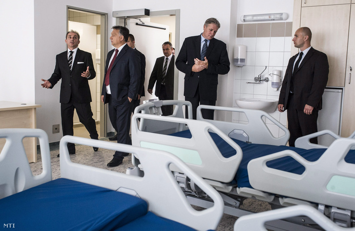

A Kórházak Fejlesztésének Fontossága
Magyarország kórházainak fejlesztése nem csupán pénzkérdés, hanem szemléletváltás kérdése is. Tisztább, higiénikusabb, emberibb környezetben nemcsak a betegek gyógyulnának gyorsabban, hanem a dolgozók is hatékonyabban és lelkesebben tudnának dolgozni. Az államnak, az intézményvezetőknek, a civileknek és a társadalomnak közösen kell vállalnia a felelősséget a változásért. Mert egy tiszta, méltó kórház nem luxus – hanem alapvető emberi jog.

Forrás: [Kép forrása]